Velaria · Headset reference
Velaria View headset reference
Every panel as the headset draws it. These pictures come from the app's own drawing code, so they match the app.
Hands: pinch to press, pinch and hold to drag. Controllers: point and pull the trigger. Look down to open the panels and look back up past the horizon to close them. Grab a panel's top bar to move it. It stays where you put it.
The strip
The strip is always there when the panels are open. It answers two questions at a glance: which layer am I on, and which thing will my hand move?
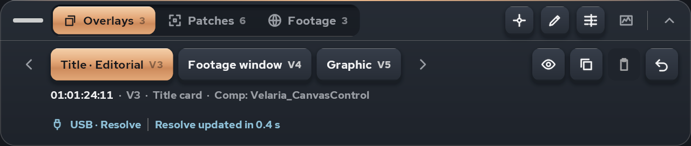
- Overlays · Patches · Footage is the layer control, with a count of what is on this frame. Overlays are titles and footage windows, and you can pick them in the picture. Patches are LatLong Patcher windows. Footage is the whole sphere (PanoMap or Velaria Orient 360) and the Velaria Trim pass.
- The four icons on the right show and hide the Selected, Settings, Timeline and Scopes panels. A panel you hide comes back where you left it. The chevron rolls the strip up to this bar, which is all you need once the panels are placed.
- Row two has one chip for each thing on this layer, named for what it is: Title · Editorial, Footage window, Graphic. A title plugged into a Canvas Control is one card with that Canvas Control, not two. The copper chip is the one your hand moves, and there is only ever one. The arrows page through them.
- Copy, Paste and Undo act on the picked chip. Undo is Resolve's undo.
- Below that: timecode, track, clip, and what the overlay is built from. Then the status line: the link (USB or Wi-Fi), the software, and the last round trip (Resolve updated in 0.4 s or Rendering… 1.2 s). A problem shows there only while it lasts: dropping frames, a delay over 250 ms, or a Resolve setup issue with its fix.
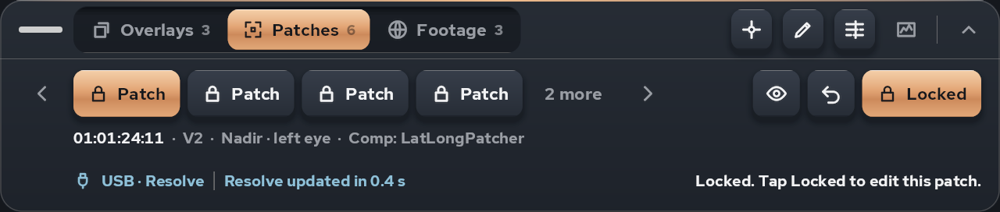
On Patches, nothing in the picture can be picked. Tap a chip instead. The lock switch on the right locks the picked patch. A locked patch shows a lock on its chip, and the panels refuse changes until you unlock it.
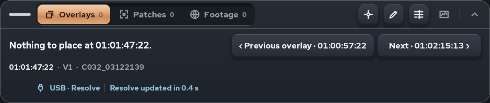
An empty layer says so and offers the nearest overlay on either side, with its timecode. One pinch jumps there.
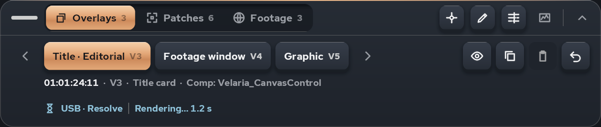
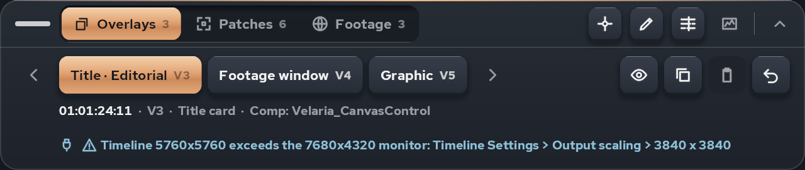
When Resolve's monitoring size, output scaling or frame rate is wrong, or no picture arrives, the status line says so with the fix in Resolve's own menu words. Fix it and the line clears on its own.
Selected
Everything about the picked card is on this one panel. The first tab is Placement; the tabs after it are the card's own pages (Frame, Glow, Stereo for a footage window; Text, Plate, Lighting for a 3D title).
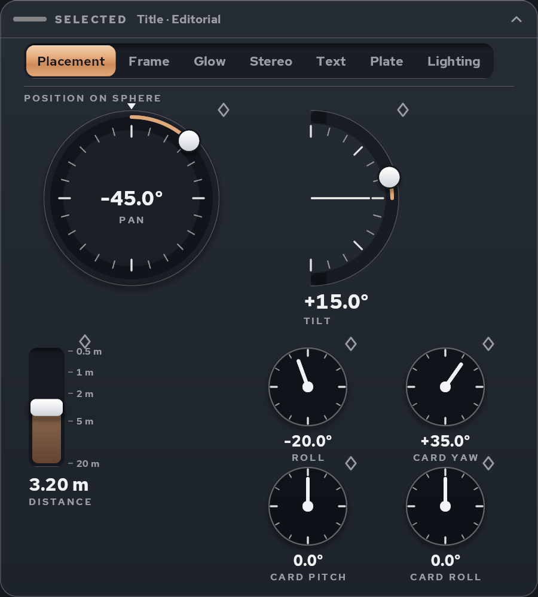
- Ring (Pan): you are the centre and front is up, at the white notch. Drag the dot around. The copper arc shows how far from front you are.
- Arc (Tilt): a side view. The white line is the horizon.
- Throttles (Distance, Scale): up is nearer or bigger. The real units are printed beside the travel.
- Dials (Roll, and the card's own yaw, pitch and roll): grab and turn, like a knob. Tap a dial to zero it.
- The diamond beside a control is its keyframe. Outline: not animated. White: animated. Copper: a keyframe on this frame. Tap it to set a keyframe at the playhead.
- Or skip the panel: pinch an overlay in the picture and drag it. Pan and Tilt follow your hand.
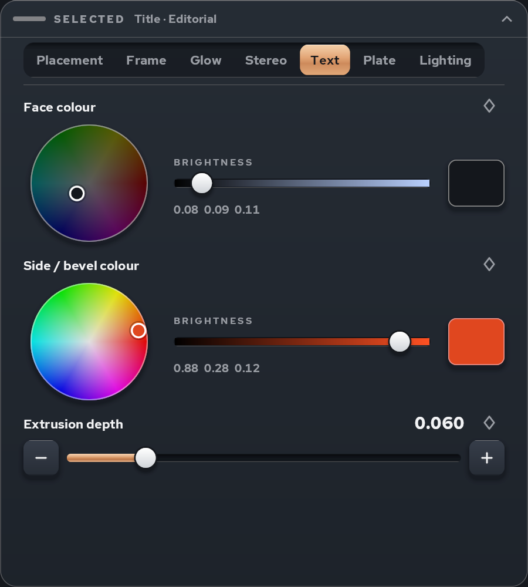
Bars have nudge chips for exact steps. An on/off control is a switch. Colours get a wheel with a brightness bar and a swatch.
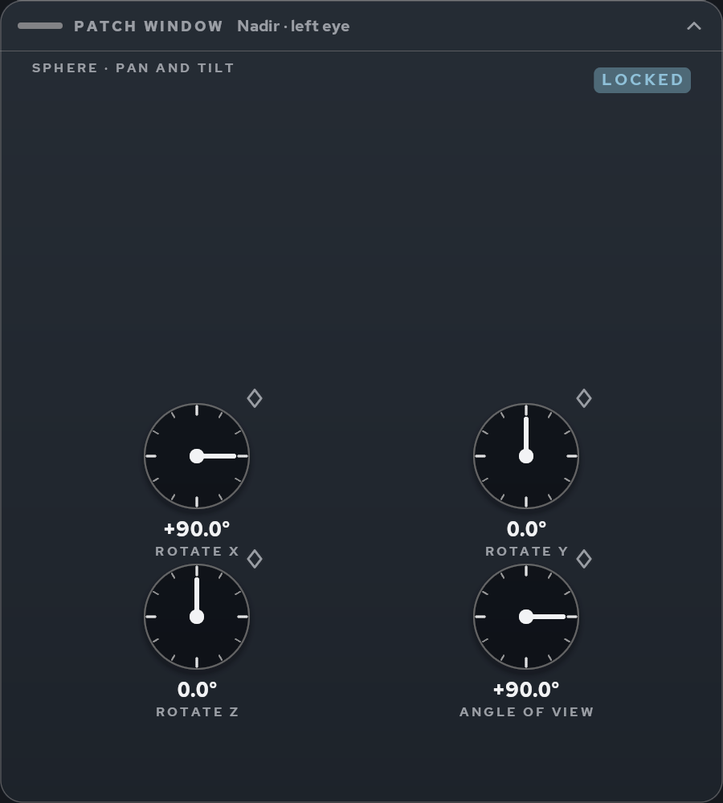
For a patch or the whole picture, the same panel shows that tool's rotations. A locked patch shows LOCKED and ignores drags.
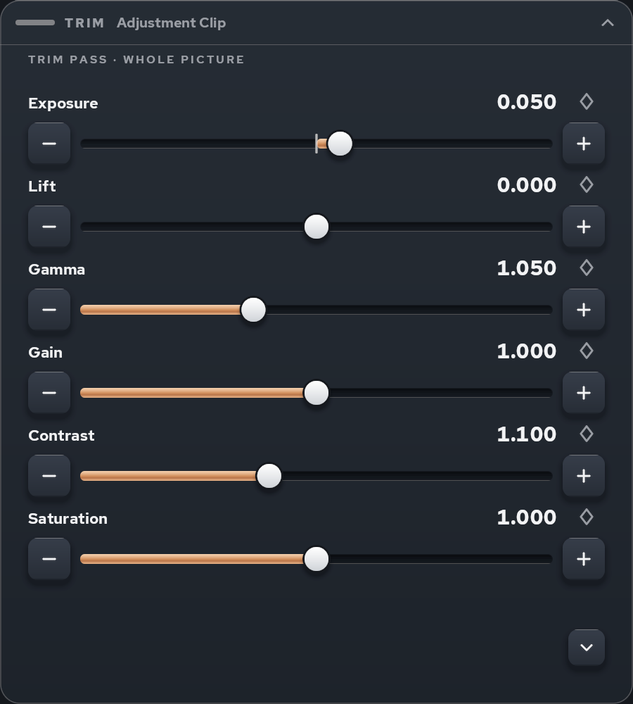
With a Velaria Trim picked on the Footage layer, the Selected panel becomes TRIM: exposure, lift, gamma, gain, contrast, saturation, temperature, tint and amount, as bars.
Settings
Closed until you open it from the strip. It holds the app's own settings and the numbers you only need when something is wrong.
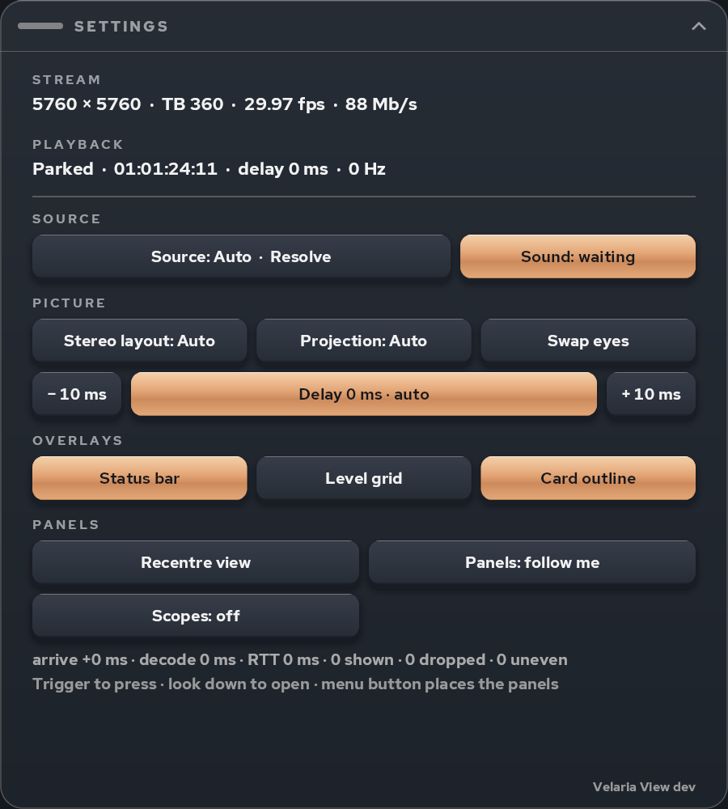
The View tab:
- Stream and Playback: picture size, layout, frame rate, bitrate, timecode and delay.
- Source: Auto, Resolve, or Premiere / After Effects (experimental).
- Picture: Layout, Projection, Swap eyes, and Delay. Delay is automatic. The 10 ms chips set it by hand; tap the middle chip to go back to automatic.
- Overlays: Status bar, Level grid, Card outline.
- Panels: Recentre view, panels placed or following you, Scopes on or off.
- The versions line at the bottom right: the headset app, the Mac package, the bridge when it differs, and Resolve. Take a screenshot of this line when you ask for help.
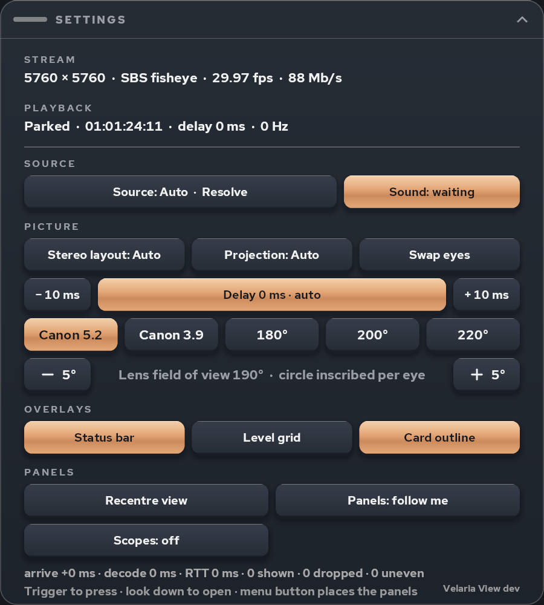
With the Fisheye 180° projection, the lens presets appear: Canon 5.2 (190°), Canon 3.9 (144°), 180°, 200° and 220°, with a 5° trim either way.
Timeline
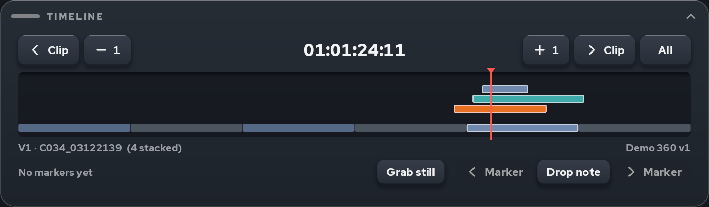
Clip lanes for each video track, the playhead in red, and markers above. Drag in the lanes to scrub. Clip arrows jump to clip edges. -1 and +1 step one frame. The chip on the right zooms to All, 60 s or 10 s.
Play and stop stay in Resolve. Use the space bar.
Scopes
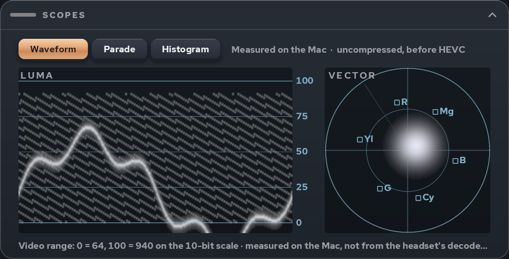
The scopes are measured on the Mac from the uncompressed picture Resolve plays out, before it is compressed for the headset. Choose waveform with vectorscope, RGB parade, or histograms. The lines at 0, 25, 50, 75 and 100 are video range. The vectorscope carries the 75% colour-bar targets and the skin-tone line.
Scopes are off until you turn them on, in Settings or with the scopes icon on the strip.
Level grid
Turn it on in Settings (Overlays, Level grid). A level copper horizon with yaw ticks and pitch lines sits over the footage. Use it with the Footage layer to re-level a shot: bring the real horizon to the line. The grid belongs to the room, not the footage, so it never moves with your edits.
Controller shortcuts
| Button | Does |
|---|---|
| Right A | Status strip on or off |
| Right B | Swap eyes |
| Left Menu | Panels placed or following you |
| Right stick up and down | Delay, 10 ms a step |
| Right stick click | Delay back to automatic |
← 180, 360 and fisheyeKnown limits →
DaVinci Resolve, DeckLink and UltraStudio are trademarks of Blackmagic Design Pty Ltd. Meta and Quest are trademarks of Meta Platforms, Inc. Mac and macOS are trademarks of Apple Inc. Canon is a trademark of Canon Inc. NDI is a trademark of Vizrt NDI AB. Velaria is an independent product and is not made or endorsed by any of them.